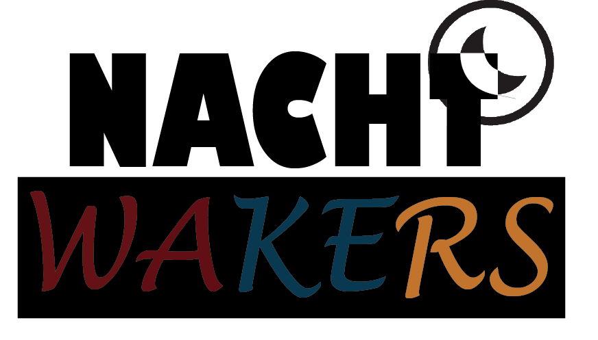
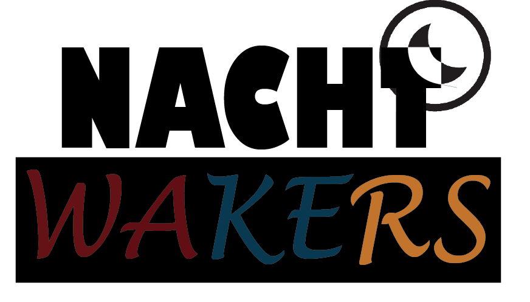

Logo V1
I started to mess around with the colors of the logo. This would give the band a more colorful aspect.
You can also see that I experimented a bit with the moon of the band.
There are also a few fonts that I experimented with.
 
